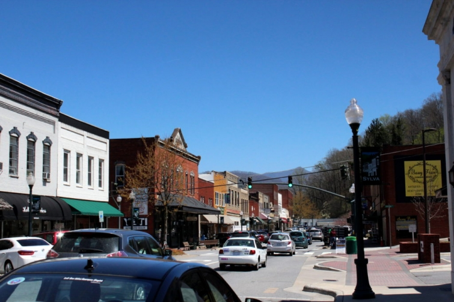
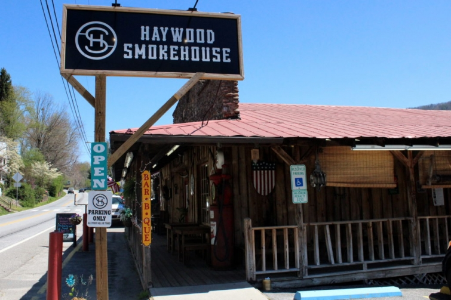
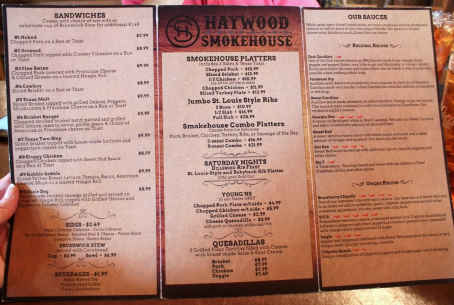

.png)
.PNG)
.PNG)
.PNG)
.PNG)
.PNG)
.JPG)
.JPG)
.PNG)
.PNG)


Happy Weekend! So we have toured the cottage where we stayed on our recent trip. Now let’s go somewhere! I told you the cabin was located outside Waynesville, North Carolina, but when you are driving there from Georgia you will go through a number of small charming towns. The photo at the top of the post is downtown Sylva (which we will look at in a minute.) Our first stop, however, was in Dillsboro for lunch.
Haywood Smokehouse there in Dillsboro has delicious BBQ! I have said for years that my very favorite barbeque is at Heirloom Market north of Atlanta. Well move over Heirloom. Haywood is equal to or perhaps even better!
Their chopped pork was delicious! And those “Campfire Taters” were worth fighting my husband for. 🙂
(The photo does not do the food justice. Sorry. The lighting was awful.)
 After lunch we drove maybe 3 minutes, and on the other side of Dillsboro was Sylva.
After lunch we drove maybe 3 minutes, and on the other side of Dillsboro was Sylva.
First stop – Dixie Mae Vintage Market.
Two floors of fun and unique items to discover…
Here’s one of reader Kathy’s cute booths. (Sorry DiAnne, I did not get a shot of yours. 🙁 )
But I did get a photo of the thermos I purchased from DiAnne’s booth. 🙂
We wandered down the main street that runs through the center of town and checked out a number of shops. Lots of fun accessories in this next one…
and clothing.
There were kitchen items that I had a hard time resisting!
And the outdoor shop was one of my husband’s favorites. 🙂
On another day we returned to Sylva for lunch at Lulu’s.
Bread before our meal…
I had a Reuben which was pretty good, but I think it needed more meat. (There is a place in Cleveland, Georgia called Creekside Deli that has THE best Reuben that is the bar to which I hold all sandwiches.)
My husband loved their noodle bowl!
Dessert was lick-your-plate-clean Chocolate Lava Brownie.
yummmmmy!
One evening we drove along the Blueridge Parkway with gorgeous views all around.
This is Frying Pan tunnel on the Parkway.
We stopped at Mount Pisgah Inn for dinner that night. (I promise you we did more than just eat on this trip although this post makes it seem like that is all we did!)
I loved the dining chairs in their restaurant.
There were many good choices on their menu.
I have mentioned before that beet salads are one of my very favorite foods, so I could not resist trying out Mount Pisgah Inn’s version. It was excellent. 🙂
And just look at the fried chicken my husband ordered.
It was also delicious!
And because I only had a salad for my meal, of course there was room for dessert! 🙂
French Silk Pie…it was pure melt-in-your-mouth rich deliciousness.
The dinner that night was wonderful, but the sunset view from our table was even better.
How can you top that? 🙂
I hope you have a great weekend. Are you traveling anywhere? Don’t forget to enter the giveaway going on here until Sunday night 4/24/16 to celebrate 4 years of blogging. 🙂
To enter, simply leave a comment on any/or all posts that publish between 4/17/2016 and 11:59 p.m. Eastern time 4/24/2016 (on the blog post itself – not an email reply please)- one comment per post please. I’ll announce the winner, chosen from a random drawing, in the first post that publishes after that.
I’ll have all the details on the places we visited in Waynesville, North Carolina in the next post.
Until next time…


.PNG)
We go through Dillsboro, Sylva and Franklin at least once a year…I will have to make a note to stop at the BBQ place there….When we lived in Florida, we would go up there ever Fall to “leaf peep”!!
So glad you had a wonderful time in Sylva! The food looks delicious and the house you stayed at looks wonderful!!
Loved your Travel Talk/Talk of the House My son, David Preston & his wife Kim, three children Cayla, Briana, & Megan live in lovely Sylva & I love coming for a visit to. see them. Now I am going to explore more of the area my next trip there
Good information
HOW EXCITING IS THIS!!! Thank you so much, Kelly, for featuring Sylva on your blog…and for showing Dixie Mae! I can’t believe you shared one of my spaces in Dixie Mae!!! Thank you! Thank you! My 84 year old dad and I have the best time repurposing things for resale there… while making cherished memories. (I was in High Point visiting with my parents this weekend, with no computer access so I couldn’t wait to get back to Sylva to leave a comment! Katrina texted me first thing Saturday morning!) As Katrina mentioned, the old Courthouse (now library) is an asset to our town. I am glad you showcased Jackson’s General Store and Blackrock Outdoor. Both are great places to shop. B&B and Humanitee are fun stores as well. When you come back, try the reuben at The Well House in Dillsboro. You won’t be disappointed…. also, try the pork sliders at Coach’s. And, you MUST have that sweet potato dumpling at The Balsam Mountain Inn. I would have told you to have the pasta salad at LuLu’s. It is so good I can’t order anything else there. That salad photo at Pisgah Inn looks fabulous. If only I could have those desserts!!! From your post, I decided that if I didn’t live in Sylva I would certainly put it on my bucket list of places to visit. Thanks, again, Kelly! You and your blog are the best!
Just a few steps from Haywood Smokehouse in Dillsboro is Dogwood Crafters………….one of the neatest places in town. Be sure and check it out.
I sure enjoyed your Sylva, NC articles. I grew up in this area and love to return for visits. We do frequent the places you visited, there is more you must go back. I am anxious for you to do Waynesville, NC……another town we love. Thanks, Pauline
Looks like a fun trip Kelly, but you made me hungry! Small towns are a treasure.
What a fun road trip. There are so many fun towns in the south. Southern cooking is my favorite. It sounds like a great trip.
xo,
Karen
Enjoyable trying the offering of food at various stops!
I love beet salads too and when we got out with friends and I order one they think I’m crazy! I wanted to tell you again how much I enjoy your blog and the many various topics you discuss. I love all your many decorating articles and the travel ones. It is so nice to see travel tips and pictures that are near to me that I can add to my list to visit. I am in Georgia but go to the mountains a good bit. We are always looking for good places to eat ☺
I have now put Sylva, NC on my list to travel to this fall…thanks to you. I love North Carolina even before The Mitford series. Thank you for a great blog!
Thanks so much for the travel tips. My husband and I love to visit and eat in the Western Carolina area. I love to shop, so those tips are VERY helpful! Keep up the great blogging work!
Love Pisgah Inn !! Love to read about your travels!!
Kelly,
You travel the way I love to travel…sights, shopping and supper! Thanks for sharing another fun trip with us. I love to “e-travel” with you guys.
Dawn
Love to read your blogs. Since I live in Macon right now, I keep a list of the places you recommend and have been able to try a lot of them. I also have a list of places to go and things to do and have added many that you have written about. This trip to Dillsboro, Sylvia and on up the Blue Ridge has now been added to that list. Thank you for letting us visit these places through your blog. Congratulations on 4 years,
Great photos of your trip! I’m now inspired to pack a bag, grab my husband and hit the road! Love your blog! Congrats on 4 years! Thanks also for the chance to win!!
I have to tell you a funny story about the Pisgah Inn. When my husband was District Ranger on the Parkway, I got a call from the Pisgah Inn wanting me to find my Ranger husband and tell him that a bear, that they called Blaze, was trying to break into the kitchen at Pisgah Inn. I called my husband and he took their bear trap up to the Inn, set in and started home. I got another call from the Inn and Blaze was in the trap. So I called my husband back and let him know. He turned around and went back to the Inn to get Blaze and the trap. He headed back to the Ranger station to leave Blaze and the trap. By this time it is well past his shift and getting late into the night. He just put Blaze and the trap in the parking space that it was always in and came home. There was a maintenance worker that always parked his truck in the space beside the trap. You can imagine what happened when the maintenance worker came to work the next morning! This story and many others are in the book, The Blue Ridge Parkway by Foot: A Park Ranger’s Memoir.
Love your shopping and meal tours! That menu cover for Pisgah Inn was beautiful. And their view, top of the chart!
I drooled a bit at every plate. The shopping is my favorite way to get to know a town. I try to find a piece of local pottery everywhere we go as a reminder of the area.
Thanks for the trip once again!
Thanks so much for showing us around. The shops look amazing (as well as the food!) I’ve never eaten at an authentic barbecue restaurant and I’m excited to try someday if we travel down through the states. -Jenn
What a fun getaway! I love each and every one of your “food” posts! I’ve always wanted to go to North Carolina – looks like you found some sweet towns to tour!
Loved the plaid thermos Looks like y’all had a great time exploring all the eating places
Thanks for sharing! Hope to get to North Carolina someday! Looks wonderful!
We are new Georgia residents, and I like love following you and your travels.nwe hope to go to many of the places you post about. Thanks!
The beet salad looks delicious.I need to venture out of Highlands and Cashiers.Thanks for giving me new places to explore.
Okay, I’ve researched this area and possible towns to stay in that are not too far from Asheville, but you had me at the food! I think I know where we will be going to eat on our next western NC trip. Campfire Taters, yum! Oh.my.word!
I think I might start a list of all the restaurants you eat at…and I’ll plan my own itinerary based on your restaurant suggestions! Everything looks so scrumptious! Enjoy your weekend! 😉
Kelly, I did your South Carolina trip and it was wonderful. Now, I’m planning this trip to North Carolina.
Kelly, so glad to read this post! Unbelievably, we have eaten at each of the restaurants you visited. I absolutely love the Pisgah Inn, and the food is always good. I particularly enjoy their mountain trout which they will filet at the table. Your travels are always so much fun, and offer tips on food, shopping, and interesting things to see. The Blue Ridge Parkway is a jewel, with many wonderful hikes. Your blog is the best!!
Love cute little towns…. And I would always leave room for dessert too! Yum!!
We haven’t done any traveling yet. We take care of our 21 month old grandson during the week which keeps us a bit tied down until summer. Fortunately, his mama is a teacher and we have summers off! We live in Texas and there are so many places in our state we have never seen. So that is our summer plan, to take long weekend trips around Texas.
So fun living vicariously through you on your travels! I love that you take a picture of the menus! That beet salad looks amazing and what adorable shops on Main Street. Wishing you many happy travels ahead…
Kelly,
I was so excited to see our town of Cleveland, GA mentioned in your post. Yes, Creekside Deli is a favorite of the locals. I would love to show you all the other wonderful and unique places to dine and shop. We truly have the most wonderful place to live! Hopefully you will visit again and explore North GA as we know and love it.
Sue
Shopping, good food, and the beauty of the mountains, what better way to spend a weekend? The beet salad and French silk pie made my mouth water. The plaid thermos brought back memories. I had a lunch box and thermos just like that in elementary school. Loved tagging along with your tour! Thanks, Kelly.
Getting me excited about North Carolina! My husband and I are moving there in a few week–courtesy of the Army. Thanks for the great posts, Kelly!
Thanks for sharing! My husband and I love to shop and eat in small, charming towns.
Kelly,
I am beyond thrilled you spent some time in Sylva. Kathy and I thought the thermos had your name written all over it when I put it in the store. How funny you ended up with it! Thank you!
Today was a beautiful day in Sylva. Lots of people were trout fishing on the river (locals call it The Tuck). Also, the annual Greening Up the Mountains Festival was taking place downtown. The mountains are calling and you must come on back.
I hope you come visit again soon.
DiAnne
Great post! I’m definitely going to keep Haywood Smokehouse and Dixie Mae Market in mind if we make it down that way. 🙂 My husband wants to check out a golf course, etc. in Whittier. 😉 Those views from the inn are beautiful! All of the food looks delicious. I’ve bought a couple of thermoses at estate sales. can’t wait to see how you use yours. 🙂
Thank you Kelly for the pictures and tour. What a beautiful day! I especially liked a peek into the shops.
You’ve gone to some great places and I’m enjoying seeing the pictures. The only thing is that your food pictures are making me gain weight. Really. 🙂 It all looks soooo good.
I have visited Dillsboro, but not Sylva. Need to check it out and gosh all that food looks good!
We do roadtrips through Georgia, NC, and Tennessee frequently looking for a future “home” town. Enjoyed your stops and am going to find that lovely fried chicken next time, no matter what.
Next time we plan to visit the Carolinas, I will review your restaurant choices. My favorite in Greenville, N.C. is Tupelo Honey Cafe. First time I had fried green tomatoes. I too have a crush on all the new beet salads.
Kelly, thank you so much for sharing your travels! I absolutely love that entire area of North Carolina! We almost moved to Sylva ten years ago, so it was wonderful revisiting the area again through your lovely posts and pictures. I always look forward to see where you’re taking us next! I have a nice list of places to visit, thanks to you. 😉
Love following your travels. We will be empty nesters this coming year, so I am gathering ideas!
I am ready to hit the road to shop, eat and enjoy the view. Thanks for pointing me in the right direction.
A delightful post! Great way to start the weekend! Loved the thermos–that plaid was very popular back in the days of my youth. I want to go to a place like that to shop!! And the menus/food were great! You do such a nice job sharing the sights– almost like being there. Thank you so much!! No traveling here– just downsizing and getting rid of things no longer needed plus working on old pictures/genealogy of my family. Spring has been lingering this year so nice that it hasn’t been scourching hot yet! Enjoy your weekend!! 🙂
What a charming town. Happy weekend!
Congratulations on 4 years of blogging! It looks like you and your husband are enjoying “retirement life”! 🙂
What a wonderful trip! So happy spring has sprung and vacations are on the way.
Thanks,
Shelley
You made me hungry Kelly! I love N.C. I went to college in Montreat and my daughter now lives in Charlotte N.C. These Fl. Crackers love to visit the Mts.! Congratulations on your 4 years, it has been a joy to follow your journey. Thank you!
What a fun trip, Kelly! It’s fun armchair traveling with you. The food looks scrumptious, especially the chocolate lava brownie. Yum! Thanks, Kelly!
I do believe this isn’t far from my neck of the woods in Ga. We’ll have to go there when hubby has some time.
Have not commented before, but I love your posts and especially loved the photos today. About 5 years ago I was on vacation in that area and it was beautiful. I would do it again in a heartbeat! Thanks so much!
I loved this post. My brother and SIL live in NC so next visit we will have to take a road trip. The photos of your delicious meals made me hungry.
Love this area! You have given us some new places to try..I appreciate your lovely pictures and comments. It seems I have “known” you longer than 4 years
That food! I seriously need to get out and explore more. Though I’ve driven by, I haven’t stopped at the Pisgah Inn in years. Need to do that. I can remember many a time we’d been hiking all day and stopped there for the bathroom!
Thank you,Kelly, for these beautiful photos of North Carolina. Love the beet salad and fried chicken and the French silk pie!! But most of all, it’s the beautiful smokey mountains that I love!
You are making me hungry for BBQ!!!😉
I’m always happy when I see you have a post in my Feedly! Keep ’em coming, and thanks!
How great is the South? Such diversity. I love taking the road less traveled. Small towns have so much to offer. Love that plaid Thetmos!
I love dining at new restaurants when traveling. It’s the best part of a trip.
Loved reading and looking at your pictures from your recent trip. Makes me realize there is so much more adventure to be found .
I will have to put these places on my bucket list. Fun!
Looks like Sylva NC is on the trip bucket list!
That’s a great area to visit. We were there years ago. My great, great grandmother was from that area. After seeing you photos I want to go again! Would love to win the giveaway!
Loved those mountains! I’m on my way to a dog show in Zolfo Springs , Fl. today. It’s a tiny outpost on Florida’s west coast situated among orange groves. The show site is on the Peace River. My friend Doreen and I are going, along with her handsome Frenchie, Romeo, who will get his first ( of many ) looks at a dog show. It promises to be a ” chamber of commerce” day : warm and sunny with a slight breeze and the hint of orange blossoms in the air. I’m looking forward to it!
Sylva is one of my favorite places. I have been there many, many times!
Your trip looks so fun!
Thank you for the giveaway!
I want your life! NC mountains have the neatest towns.
I would love to take a road trip to this area. Thanks so much for sharing your trip with us (and I LOVE that you share the places you eat!)
We are off to spend the day in Birmingham. Daughter in Law, Katy, invited us to join them for a visit to Pepper Place in downtown Bham. It is a Farmer’s Market on steroids so I have heard. Looking forward to checking it out and the best part is seeing my little Grimmlins.
NC is a beautiful state, and you pointed out some great stopping spots. Your blog gets me itching to get in the car and wander!
Hi Kelly, I loved your pictures from Sylva. Dixie Mae’s looks so fun. Your reader Kathy’s booth looks like a treasure trove of interesting and beautiful things. (Full disclosure–Kathy is my cousin!) But Sylva is seriously a beautiful small town with so many wonderful people who live there.
I want to try that beet salad! We’ve been in that area at least once a year, but never eaten at the restaurants you mentioned.
Kelly, I am so glad you had fun in our neck of the woods! Glad you made it to Dixie Mae and I love the thermos you purchased. That pretty courthouse on the hill in downtown Sylva is their library and it is beautiful inside with unbelievable views. I wish we had remembered to mention it to you. The Pisgah Inn is our go to when company comes! I have never had a bad view or meal there.
Isn’t retirement the bomb??!!
i have enjoyed your trip so much! I’m putting Sylva, NC on my list of places to visit. It reminds me of the cute little town down the road where I live, Trenton, KY. Thanks again for sharing your travels with us, and I always enjoy looking at your meal selections!
Roasted beet salad is a favorite of mine too, looks delicious!
Looks like a perfect and delicious day out.
What a glorious journey! I have saved this post, in hopes of. Going myself soon. Thank you for sharing.
I think trying new restaurants is one of he best parts of traveling. Thanks for sharing your trip!
My husband + I were discussing Yelp last night. While he thinks it’s a big, fat forum for haters to hate, I disagree. I use Yelp when we travel! How do you find all those cool restaurants + shops? Yelp?
——————————————————————–
Hi Kay! I rarely use Yelp…not because there is anything wrong with it. I am just used to using Trip Advisor. I use it for all hotels and restaurants. I also read magazines that give me recommendations for shops and look online i.e.: Best Shops in Highlands, NC for example. But my husband says basically the same thing yours does. He thinks people are more likely to write when they are mad about something, but I think TripAdvisor has a lot of positive reviews, so I have to disagree with him there.
Kelly
I’m the person that told you that I hoped your got to go up on the Parkway. These pictures are from my husband’s district on the Parkway. So glad you got to see it. It truly is a magical place. You must look up his book. The Blue Ridge Parkway by Foot: A Park Ranger’s Memoir.
What a perfect trip! You always find the best places! I love North Carolina. xoxo, Anne
Thanks for the journey to a part of the country I’ve never been.
Hi Kelly, always enjoy your travels, the little shops and the food. Your beet salad looks delicious. May have to look up some recipes. Enjoy your weekend.
Thanks for taking us along on your trips! Loved the little shops. How could you resist the kitchen stuff?!!
Thank you Kelly! I’ve so enjoyed our trip! Great choice accommodation …perfect countryside and interesting towns to explore. Great to wander around the shops and the food!! so delicious 🙂 thanks again for sharing ….
Hope you have a lovely weekend …beautiful day here …sun shining and a gentle breeze. Just perfect for a walk by the river!
Rosemary